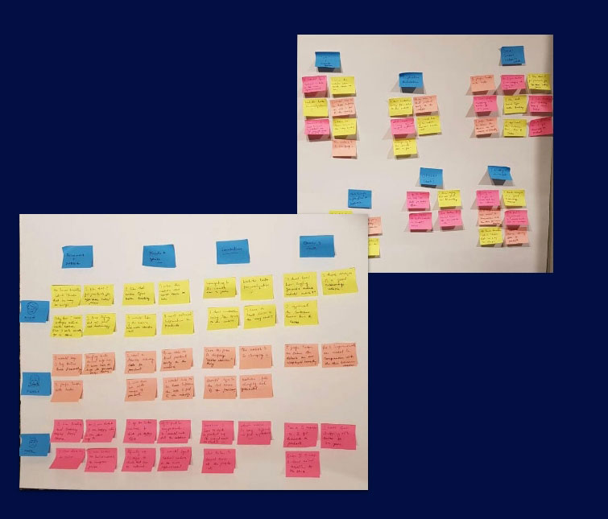
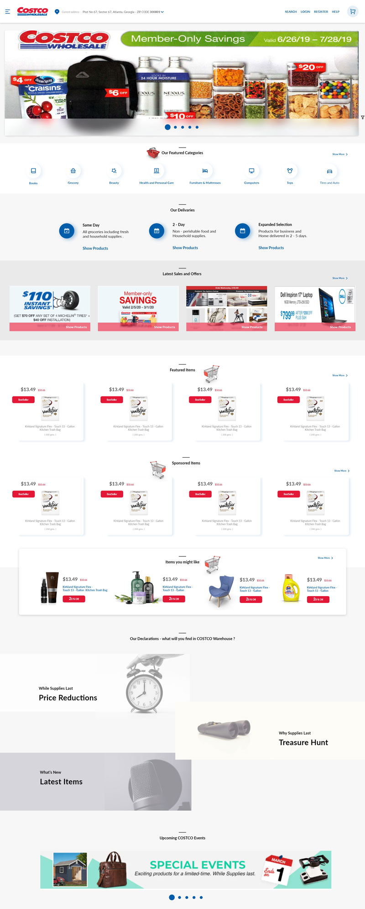

Overview
Context
We started this as a collaboration project for UX Design Contest by Adam Ruf. I brought in the idea of redesigning the COSTCO platform as I am a regular and loyal Costco customer. However, this UX Redesign Contest made me wonder why my husband and I always preferred purchasing in-store rather than shop online at Costco's website. It was then we picked this website for our redesigning venture.
Result of The UX Design Contest
Our work gets recognized as the winning entry for UX Design Contest.
Valuable charity was made to Make-A-Wish Foundation with our winning prize. :)
Duration
We had two weeks to finish and submit this Redesign project
Summary
We improvised, designed, and tested the overall search and navigation experience of a popular Ecommerce website, “COSTCO” through a user-centric design thinking approach.
Highlighting The Problem
We improvised, designed, and tested the overall search and navigation experience of a popular Ecommerce website, “COSTCO” through a user-centric design thinking approach.
User’s Problems
 customers prefer going to in-stores more rather than using the online platform for purchasing
products.
customers prefer going to in-stores more rather than using the online platform for purchasing
products.- they spend a lot of time searching for various products on the platform.
- they experience a lot of friction while using the application due to its poor navigation.
Business Problems
- The online platform of COSTCO only serves 4% of the overall business revenue
- The customers are somehow not happy using the online platform.
Success Metrics
- Increased percentile of customers who will go for our proposed design on Usability Hub.
- Comparatively lesser time in finding a product from the platform.
- Easy movement of the user during site navigation on the prototype.
My Contribution
We are a team of 2 self-taught UX Designers.
On deciding on the design process, we planned and divided the tasks among us. I took responsibility
for research and brainstorming activities. I conducted and documented the interviews. Over a skype
call, we used affinity mapping to drew insights from the data. We listed and highlighted the problems to
derive solutions.
From the interview insights, I assembled customer journey mapping to explore opportunities.
We came up with 3 design challenges. I did first challenge, we shared the second one and I contributed
to the third one.
The Role Players
Since we were geographically based out of different locations, we used collaborative tools like Click up and JIRA to plan and collaborate on this project . Below are mentioned are few other tools and methods we used to plan, stay organized and stick to the schedule.
Business Study
Before kicking off the design process, we wanted to understand what the company does and how does
it roles out its business in the market. Here is a quick snap of what we found out.
Costco is an online membership-based warehouse. It is a selling point for household, electronic, and
cosmetic products. It's headquarter is placed in Issaquah, Washington and has a revenue of $154,7B
and over 2,54,000 employees. Its main competitors are Amazon, Walmart, and Target.
What does it aims at ( Business Strategy )?
Costco's business model is to generate high sales volumes and rapid inventory turnover by offering members low prices on a limited selection of nationally branded and selected privatelabel products in a wide range of merchandise.
Every customers want to find good quality bargains and Costco is a setup to keep their customers coming back to find them. Costco builds its business model on principle strategy of low prices, limited selection, and a treasure-hunt shopping environment.
How does COSTCO works ( The ROI Factor )?
Here’s how COSTCO gets it return of investment from the business model.
Our Design Process
The approach that we decided to use for this challenge was of Ideo’s human-centered design and Lean UX design thinking process. The design decisions were supported by user research and feedback

After defining the steps to follow, we then went ahead with our plan of execution.
We divided tasks between the two of us and assigned dates with daily scrum status meetings.
Emapthise
User flow
We wanted to understand who our users are, and what are their pain points
Our primary research goals.
1. Identify critical demographics of the potential users of the COSTCO web application to help us build the user persona.
2. Identify the level of interest, frequency of usage and goals of those users interacting with the application.
3. Identify user pain points with existing COSTCO platform. Collect data on the scenario in which users would use an eCommerce platform for shopping
We strategized to do this by the following steps:
1. User survey
2. User interview
User Survey
We conducted an online user survey through a platform called survey monkey. The test was live for five days, with ten responses.
User Interview
The analytics we found was needed to be validated. Also, to learn more carefully about the users, I went to the COSTCO store to interview customer, who have used Costco's website. I found out some beneficial insights while the customers talked about their website experience.
Our Interview Questions
Interesting Interview Insights
Define
After capturing the user insights, we wanted to organize the decluttered information and define the problem we are going to focus on and ultimately narrow down to a solution statement.
Affinity Mapping
We reviewed our user interview records and data from the survey to jot down each user’s pain point onto a Post-It with the help of affinity mapping. We had some brainstorming whiteboard sessions to group these pain points into similar categories

We categorized cards to behavior/attitudes, needs/goals, frustrations, quotes, and facts for each of our participants. Creating a cluster of notes that all share a particular them.
On prioritizing each pain point based on its importance to the user, we decided, we are going to tackle, the difficulty a user faces when trying to find a product.
Problem Statement
Business Problem — Costco is known for its enjoyable in-store shopping experience at reduced prices and outstanding business model. However, most customers prefer spending time in offline shopping rather than online. Hence the website is failing to provide its value to the customer experience.
User Perspective — One such problem is the ability to search for products efficiently on the platform. The user fails to understand important product details such as price differences which makes information exceptionally non-transparent. Additional to that, the clustered outlook and poor
Solution Statement
Costco customers usually love to buy product “on-sales” as the human brain gets artificially influenced, comparing the original price “slashed down” to a lower amount. They expect a relevant and personalized experience from the platform, as they do in-store. A well-defined search and navigation experience attracts and retains customers. Also, highlighting the important information of products very transparently to the users promises a boost on increasing the online sales and conversions.
IDEATE
After defining the problem and solution statement for COSTCO, we focused on implementing the solution that we have thought of through defined information architecture. It helped us to channelize our thoughts in a more structured manner.
User Story
We started the ideation process by focusing on one user story to narrow down our problem solving that
will revolve around the possible solutions we thought of.
As a user, I want to search for a product quickly across the available department categories on the
Costco platform.
User Requirements
1. I want to view all the product options with easy sort and filter functionalities.
2. I want to see the ratings, discount pricing, savings, and other relevant information for each product item.
3. I want to search for a particular product through department categories easily.
4. I want to navigate easily throughout the platform
Customer Journey Mapping
We used the customer journey mapping to represent a series of touch-points and feelings that customers go through while searching for a product. It will help us understand the gaps in customer experience and explore new opportunities. we used insights from user research and analytics from the survey to base our assumption in this customer journey mapping.
Tree Sorting
We first focused on one of the main pain point which was the navigation structure of the COSTCO website. We analyzed the current structure and tried to bring the clicks down through tree sorting
Our Findings
1. Every CTA opens up to a new branch here.
2. Poor Navigation Hierarchy
3. Minimum Number of Navigation Branches - 4
4. Different Views for a Product ( Washing Machine - if the user goes through the landing search page or categories page he will find the washing machine list page . However, the user will not be able to move to the same list page through offer, he is only capable of viewing the ones which are in offer.)

Our Proposals
1. Every CTA opens up to a new branch here.
2. Refined Navigation Heirarchy ( TIER 1 CTAs - Search, ZIP Code, SideBar Navigation; TIER 2 CTAs - COSTCO Servieces)
3. Minimum Number of Navigation Branches - 3
4. Single for a Product ( Washing Machine - if the user goes through the landing serach page or categories page or offers page, he will always land on the same washing machine list page with refined filters on the basis of chosen parameters by the user. )
user flow
Prototype
The information architecture that was analyzed through user flows and customer journey mapping was then being transformed into own wireframes. We dig deeper to find out what was wrong in each screen from the usability and design prospect
Design Challenge One
The challenge : User onboarding on the Costco website ( Costco homepage), since it is the starting step for the user to use any functionality on the platform. Hence, we focused on improvising the dashboard experience first.
Design problem artefacts and highlights : the below image talks about the problem we noticed on the current screen, and why?
Solution

Things We Improvised
1. Primary and Secondary Data
We removed the necessary secondary actions from the website.
The other categories ( COSTCO services ) were shifted to the side navigation menu so that the user can
focus more on the primary information such as SEAR, login, REGISTER, and other.
2. Data Categorization
We decluttered different sections of the website to help users categorize the information based on
their requirements. We highlighted each section differently so that the user can view them separately
and navigate accordingly from the screen.
3. Design Hygiene
We introduced design hygiene in the system, and we brought in the uniformity in text, icons, and other
font formats with appropriate white spacing. It decreased the heaviness of the system in totality. It also
ensured to create a first good impression on any user who will be visiting the website for the very first
time.
Design Challenge Two
The challenge : user search and navigation experience on the COSTCO website since the user needs to move freely across the site and provide them with proper feedback during the searching of the product
Search Feature Difficulties : The below image talks about the problem we noticed on the current screen, and why?
Things We Improvised
1. Search with Autocomplete Design
We reworked on the autocomplete feature of the search showing them more relevant search results.
As represented in the first image, the search results highlight the differences in the search
2. Search with No Result
The No Result feature is added to the search bar. We initiate the user to go ahead and try with a
different text input to search on the screen. The design does not discourage the user from getting out
of the system, in case he has found his desired result.
3. Search with Search Result Grouping
It is essential to capture results from different entities, which makes the suggestions potential enough
for the user creating a better and easier navigation experience for the user.
4. Search with Back Navigation and Autofocus
On the click search icon, the search box takes the entire focus on the screen so that the user can focus
only on his search constraints. It also has back navigation across the search box; the user can
immediately back navigate to the previous view.
5. Product Categorization
We have created subcategories and parent category ( try to stay under 10 per class not to overwhelm
the user. ). The "Categories" are mutually exclusive of the "filters." Filtered product attributes ( or
product states ) should not be confused with categories.
6. Set Reminders
The searched out products in the results which are not available currently or is out of stock, users can
actually set up reminder to receive notification , once the particular product is back in the market.
Design Challenge Three
The challenge : user product page and filter, since it is important for the user to easily categorize among the different groups of the product. The filter needs to be narrowed down to a single search so the user can avail of his desired product within the shortest amount of time.
design problem artefacts and highlights : the below image talks about the problem we noticed on the current screen, and why?
Things We Improvised
1. Product with Pricing Difference and Savings
We introduced the pricing highlight along with “strike -off” original pricing that will encourage user to
buy the product, as they can easily understand price difference after discount.
2. Product Filters
We introduced faceted filters to help narrow down the product choices and also provided relevant
sorting and filtering option to the entire list. Each products are listed in appropriate category and have
relevant filters that will only search thought the selected categories.
3. Easy Add to Cart
We also provided the easy add to cart functionality directly on the list page by introducing the cart
option, user can directly add the quantity and click on the cart icon. After the product is added to the
cart, we highlight the card with a double tick and also update the cart at the top right corner with the
count.
Usability Test
After creating the prototypes, we then went ahead with usability testing to understand if the designs are really solving people’s problems. we did this with the help of a platform called usability hub. We did base our usability test on three testing matrix .
first click test - overall result : success
Preference Test — Overall Result: Still Needs Improvement
Reiterate
we checked the usability tests and found that the first two tests did really well, However, people were not much happy with product card designs as they found the image really small. Hence we went ahead and recreated the designs to get it validated
Conclusion
future product scopes
1. the end checkout experience needs to be worked upon.
2. users should get emails and notifications from the COSTCO office, or they should have an online costco support system.
Lessons learnt
We only did three tests due to the pricing limit of our testing platform, hence we could not show the relevant comparisons between old and new designs.
We compromised on the size of the product images on the product’s category page, despite doing good design, it compromised with the user’s readability and product scanning. Due to this, they went ahead with the old design. However, we took that into our redesigning aspect
End story
For this case study, we understood the importance of user experience on an e-Commerce platform. online sales can boom the business of these companies in a magical way if we provide users with similar offline experiences. An eased out usability increases the scope of the same.